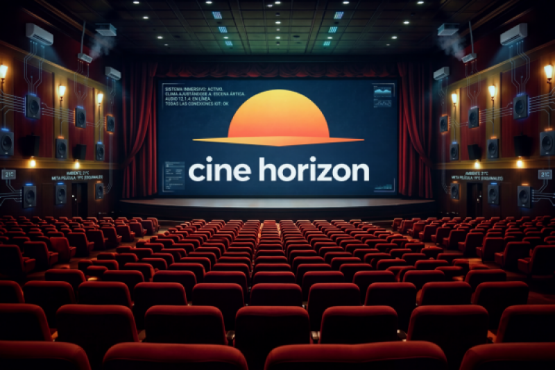

Sales 4D Relitat Augmentada
Hi ha pel·lícules que no es veuen, es viuen.
La tecnologia IoT (Internet of Things o Internet de les Coses) és una de les principals innovacions utilitzades a Cine Horizon per oferir una experiència cinematogràfica diferent, moderna i molt més immersiva.
Aquesta tecnologia permet connectar dispositius intel·ligents entre si a través d’Internet perquè puguin comunicar-se, compartir dades i actuar automàticament sense necessitat d’una supervisió constant.
A les nostres sales 4D, els dispositius IoT treballen de manera sincronitzada amb les pel·lícules per crear efectes ambientals que fan que els espectadors se sentin dins de la història.
Com utilitza Cine Horizon la tecnologia IoT?
Les nostres sales estan equipades amb sensors intel·ligents, sistemes de control de temperatura, llums automàtiques, ventiladors i altaveus envoltants connectats a una xarxa IoT centralitzada.
Tots aquests dispositius es coordinen en temps real amb la pel·lícula que s’està reproduint per generar una experiència molt més realista i interactiva.
Per exemple, durant una escena d’acció, els ventiladors poden activar-se per simular el vent. Si la pel·lícula mostra un entorn fred o nevat, la temperatura de la sala disminuirà lleugerament. En canvi, durant escenes ambientades en deserts o explosions, la temperatura i la il·luminació poden augmentar per fer l’experiència més intensa.
També es modifiquen els efectes de llum segons les escenes. Si és de nit, la il·luminació de la sala disminueix, mentre que durant explosions o efectes especials la llum s’intensifica de manera sincronitzada amb la pantalla.
A més dels efectes immersius, els sensors IoT també ajuden a controlar aspectes interns del cinema com el consum energètic, la temperatura de les sales, la qualitat de l’aire o l’estat dels equips audiovisuals.
Avantatges de la tecnologia IoT
La implementació de tecnologia IoT aporta molts beneficis tant per a Cine Horizon com per als espectadors.
Per una banda, permet oferir una experiència cinematogràfica innovadora i diferent respecte als cinemes tradicionals, fent que els clients visquin les pel·lícules d’una manera molt més immersiva i memorable.
També ajuda a automatitzar molts processos interns del cinema, millorant l’eficiència energètica i reduint costos de manteniment gràcies al control intel·ligent dels dispositius.
Els clients també es beneficien d’unes sales més modernes, còmodes i adaptades a cada situació, millorant considerablement la qualitat de l’experiència.
Gràcies a aquesta tecnologia, Cine Horizon aposta per portar el cinema tradicional a un nou nivell, combinant entreteniment, innovació i tecnologia avançada.
**Els efectes especials de les sales 4D estan controlats i no són exagerats, però no es recomana l’entrada a persones amb epilèpsia, sensibilitat a sorolls elevats o altres condicions mèdiques que es puguin veure afectades pels efectes visuals, sonors o ambientals.**
